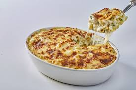

Bashamel

Description
Egyptian macarona bechamel (مكرونة بشاميل,) is a comfort food recipe popular in Egypt made from penne pasta and a minced meat sauce baked with creamy béchamel. If you’re not already familiar with it, you can think of it as an Egyptian pasta bake with bechamel sauce.
Ingredients
Meat Sauce
- Ground Beef
- Onion
- Tomato Sauce
- Olive Oil
- Thyme
- Salt
- Black Pepper
Bechamel Sauce
- Flour
- Unsalted Butter
- Milk
- Salt
- Nutmeg
Pasta
Steps
- Prepare the Pasta
- Make the Bechamel sauce
- Put pasta in a baking dish
- Put the meat sauce
- Put a layer of mozzarella cheese
- Put a layer of the creamy bechamel sauce
Home Page